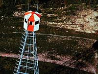
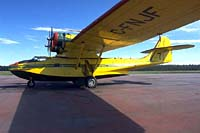
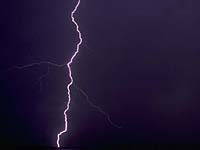
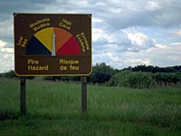
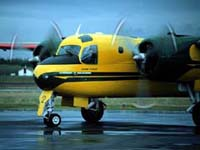
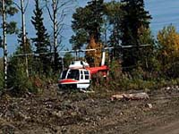
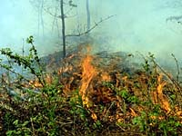
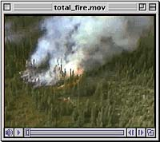

 Advances in technology have improved forest protection programs all across Canada. In Saskatchewan, about 30 remote fire weather stations are operating across the north. The up-to-the-minute local weather data they provide show where conditions are "hot" and where fires are most likely to start and spread quickly. Lightning direction finders are also in place to help pinpoint likely locations of fire by showing where lightning strikes have occurred. |
 Aircraft, manned fire towers and public reports are important aspects of the Provincial fire detection system. |
 Wildfire management includes prevention programs. A toll-free number (1-800-667-9660) is available to the public for reporting fires, and an early detection program uses aircraft patrols, lightning locator sites, and lookout towers to identify wildfires before they become uncontrollable. |
 Fire prevention includes pre-suppression as well as fire suppression activities. Pre-suppression activities use the Intelligent Fire Management Information System (IFMIS), which was developed by the Canadian Forest Service and implemented by the province of Saskatchewan. IFMIS combines a computer inventory of forest fuel types, actual and forecasted weather conditions, and predictions about fire behaviour. The system helps forest fire managers choose the best way of using fire suppression resources, by using the latest techniques, tools, and the most cost-effective aircraft support. |
 Weather stations are set up across the forest regions of the province to measure wind, rain, relative humidity and temperature. Lightning detection equipment is also in place to plot the number and location of lightning strikes. Information from these stations helps forest protection staff identify high risk areas and have fire crews, equipment and aircraft on alert in case a fire should start. |
 In Saskatchewan, lookout observers and aircraft patrols share the day-to-day firewatch. Once a fire is spotted, initial attack crews, water-bombers, helicopters and support crews work quickly to get the fire under control. It is a team approach that makes these operations successful. |

Fire causes huge losses but can also be useful. It creates seedbeds, opens cones to release seed, and recycles nutrients. Fire is also a natural control of insects and diseases. Fire reduces vegetative competition and improves wildlife habitat. |
 Forest fires became a management problem for man when he began using forests to satisfy social and economic needs. Attempts to put out almost all fires meant that a lot of the natural benefits of fire were lost. |
 The regenerative properties of wildfire have now been replaced by harvesting and controlled burning in some areas. Prescribed burns are used to reduce the fire hazard created by logging debris, to provide suitable ground conditions for planting or seeding, to eliminate unwanted tree or brush species, and to control insect and disease outbreaks. |